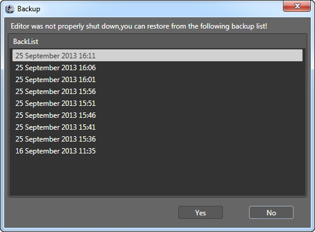

Backup and Restore
Backup
In order to protect user's data's safety, CocoStudio will automatic create a backup on time. For this function, users have no need to do anything.
The backup system follows the rules below:
1.Automatic to save a backup every 3 minutes.
2.Keep the latest 10 backup files, and the former backup files will be deleted.
Restore
During editting the projects, if a accident happened and the application closed(Include the collapse of application, system halted, power outages and so on), user can open the original project and choose a backup in the below window:

Users can choose the restore the backup by time depend users' need.
Notice:
1.After restoring the backup, changes cannot be cancelled.
2.Users had better to copy the project and avoid to restore unnessary things.